Séparé en 1841 du parc de la Patte d'Oie par le percement du futur boulevard Roederer, ce jardin abrita successivement le jardin école de la Société d'Horticulture et un parc zoologique dans les années 50. Le paysagiste rémois Edouard Redont réalisa la cascade et la pièce d'eau en 1895 et Jean Claude Nicolas Forestier créa une roseraie en 1924.
Le jardin fut réaménagé en 1982 en deux parties "à la Française" et "à l'Anglaise". IL abrite un pavillon néoclassique, siège de la Société d'Horticulture de Reims. On y trouve de nombreux arbres et arbustes de collection dont un exemplaire de "Fau de Verzy". Chaque été, une exposition florale à thème est organisée. Le jardin est muni de jeux pour enfants.
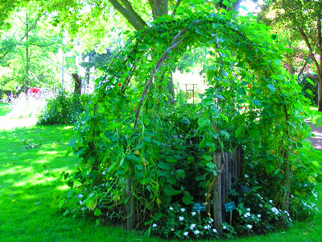 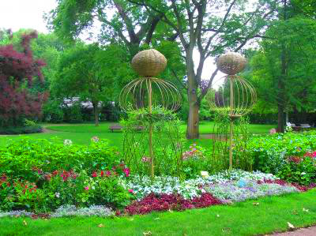
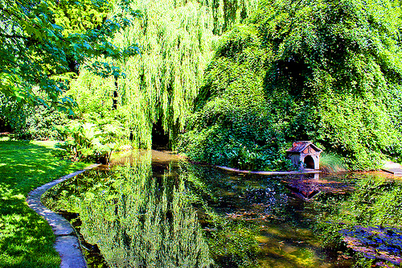
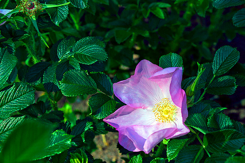 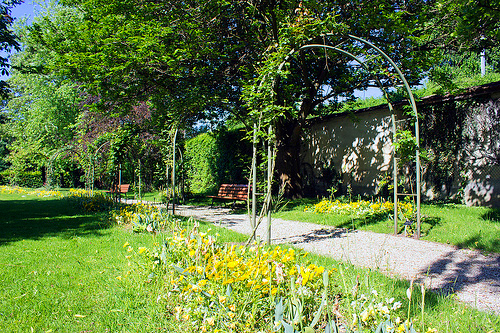
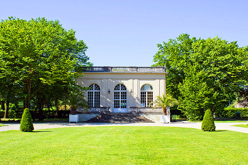
Les "Promenades de Reims", longues de plus de 1.000 mètres, emmènent les promeneurs auParc de la Patte d'oie... Ces 40.000 m2 de jardins, créés en 1773, terminent avec magnificence l'incroyable perspective de la fameuse allée...
C'est devenu le lieu des évènements culturels de la ville de Reims... on y a construit le centre des congrès ; un très beau cirque, ainsi qu'un manège ont trouvé dans ce décor de quoi mettre en valeur leur très belle architecture... Ils sont classés monuments historiques.
En 1883, le parc a été transformé en jardin à l'anglaise, puis complètement revu et rénové en 1993. Aujourd'hui, bassins, cascades, jets d'eau, fontaines en font un espace vivant dont l'élément central est l'eau...
Dans un souci d'esthétique et d'équilibre, allées, massifs, parterres sont judicieusement répartis de manière à donner toute l'amplitude nécessaire aux très beaux arbres que le parc possède, dont des très beaux séquoias, platanes ou sophoras...
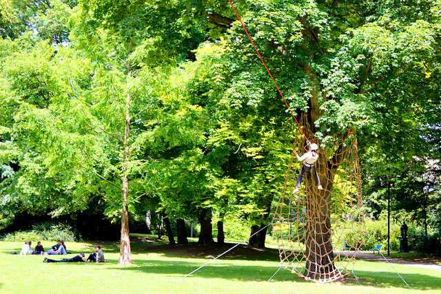 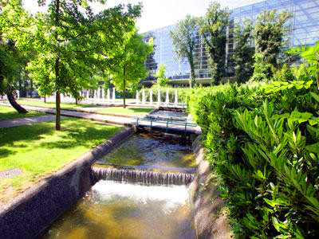
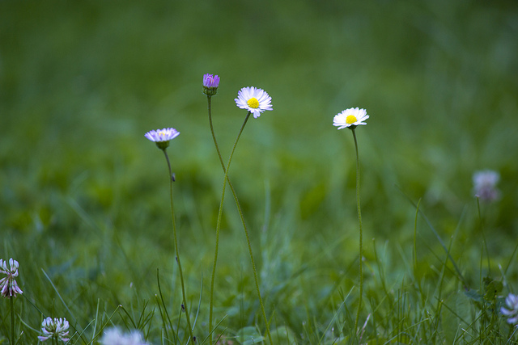 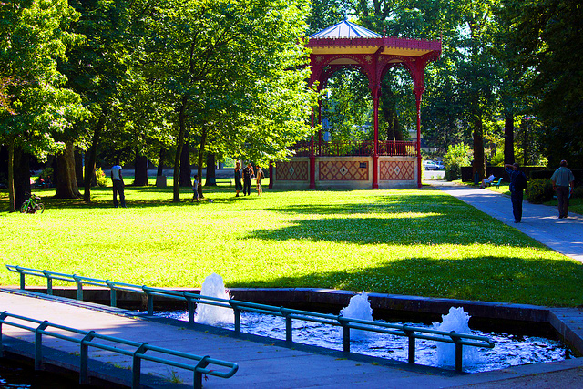
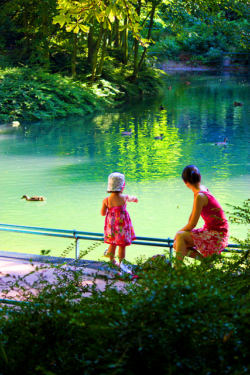
Situé dans le quartier Courlancy, à côté du stade Auguste-Delaune, le plus grand des parcs urbains rémois a été conçu par le paysagiste Jacques Sgard, en 1978. Il s’articule autour d’un plan d’eau qui se termine dans sa partie Est par une zone humide, traitée de façon semi-naturelle, réalisée en 1997. Cet espace très prisé des Rémois accueille diverses manifestations de plein air. Un parcours de reconnaissance des oiseaux a été installé en 2003 avec la Ligue de Protection des Oiseaux. Aire de jeu pour les enfants.
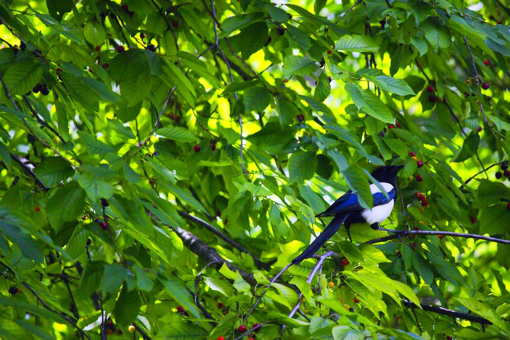 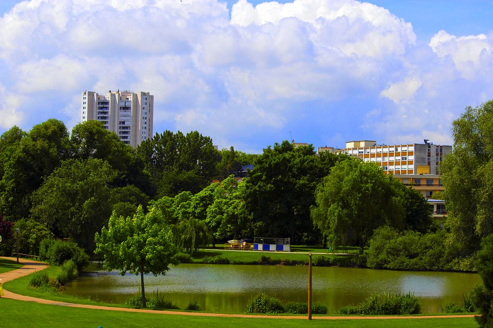
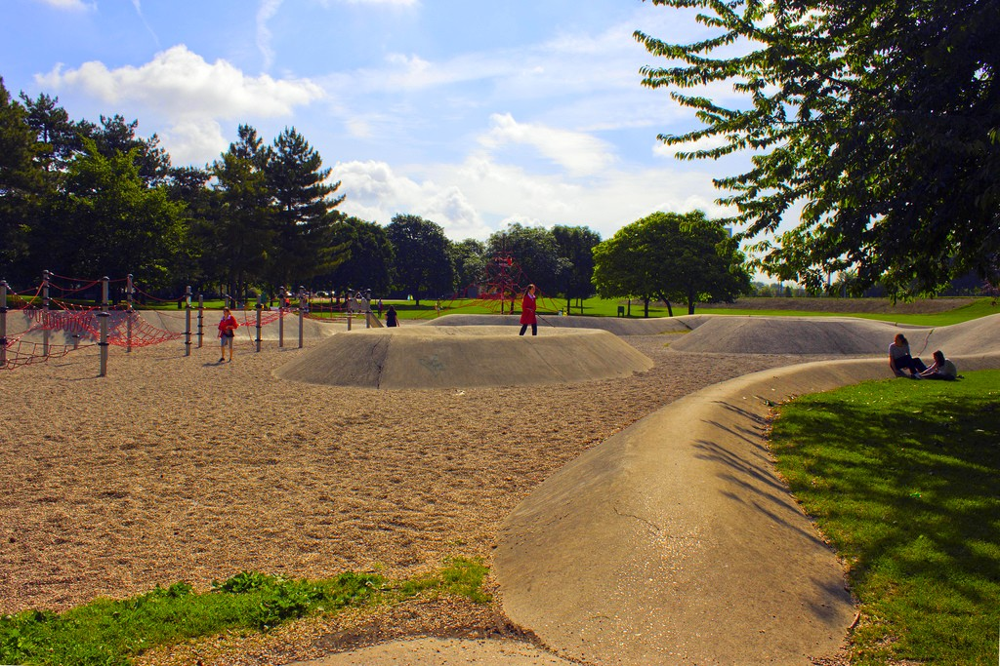 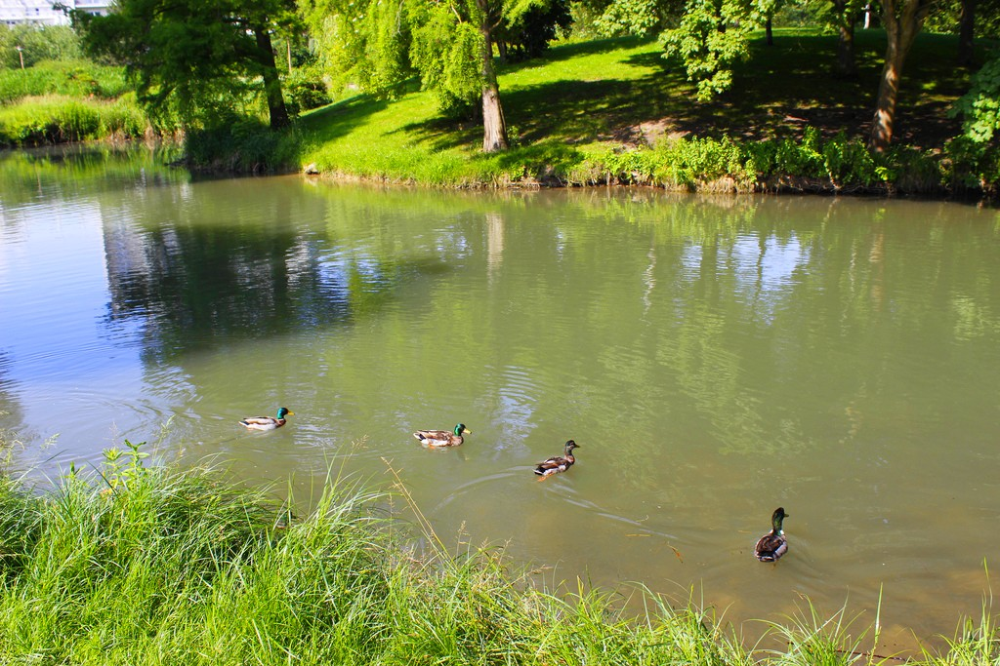